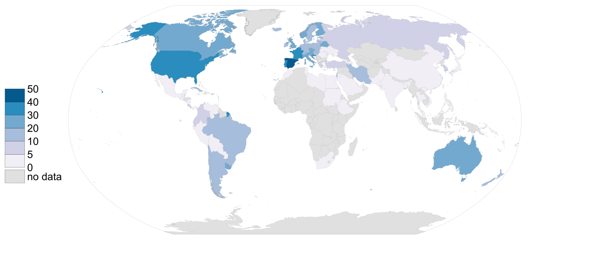

This is a quick post on how to create a map as per the Wikipedia conventions. In this case I have chosen to plot the international organ donor rates, retrieved on 2019-02-10 although the data refers to 2017 (Source: IRODaT).
Webscrapping
First step is to webscrap Wikipedia in order to get the final table. For doing so, I will use the rvest library. You can get the xpath you want to webscrap as explained here.
library(rvest)
library(dplyr)
Base <-
read_html("https://en.wikipedia.org/wiki/International_organ_donor_rates") %>%
html_nodes(xpath = '//*[@id="mw-content-text"]/div/table[3]') %>%
html_table() %>%
as.data.frame(
stringsAsFactors = F,
fix.empty.names = F
) %>%
select(Country,
RateDonperMill = Number.of.deceased.donors..per.million.of.population
)
knitr::kable(head(Base, 10), format = "markdown")
| Country | RateDonperMill |
|---|---|
| Argentina | 19.60 |
| Armenia | 0.00 |
| Australia | 21.60 |
| Austria | 23.88 |
| Azerbaijan | 0.00 |
| Bahrain | 4.00 |
| Bangladesh | 0.00 |
| Belarus | 26.20 |
| Belgium | 30.30 |
| Bolivia | 0.36 |
Now we need to choose a good source of maps:
library(sf)
library(giscoR)
# Map import from Eurostat
WorldMap <- gisco_get_countries(resolution = 3, epsg = 3857) %>%
select(ISO_3166_3 = ISO3_CODE)
Merging all together
Now let’s join and have a look to see what is going on. We use the countrycode package to retrieve the ISO3 codes of our scrapped dataset:
library(countrycode)
Base$ISO_3166_3 <- countrycode(Base$Country, origin = "country.name", destination = "iso3c")
DonorRate <- left_join(
WorldMap,
Base
) %>%
select(
Country,
ISO_3166_3,
RateDonperMill
)
Make the .svg file
As already explained, I would like to follow the Wikipedia conventions, so some things to bear in mind:
- Obviously the colors. Wikipedia already provides a good guidance for this. I would make use of the
RColorBrewerlibrary, which implements ColorBrewer in R. - In terms of projection, Wikipedia recommends the Equirectangular projection but, as in their own sample of a gradient map, I would choose to use the Robinson projection.
- I should produce an
.svgfile following also the naming convention.
Some libraries then to use: RColorBrewer, rsvg and specially one of my favourites, cartography:
library(RColorBrewer)
library(cartography)
library(rsvg)
# Create bbox of the world
bbox <- st_linestring(rbind(
c(-180, 90),
c(180, 90),
c(180, -90),
c(-180, -90),
c(-180, 90)
)) %>%
st_segmentize(5) %>%
st_cast("POLYGON") %>%
st_sfc(crs = 4326) %>%
st_transform(crs = "+proj=robin")
# Create SVG
svg(
"Organ donor rate per million by country gradient map (2017).svg",
pointsize = 90,
width = 1600 / 90,
height = 728 / 90
)
par(mar = c(0.5, 0, 0, 0))
choroLayer(
DonorRate %>% st_transform("+proj=robin"),
var = "RateDonperMill",
breaks = c(0, 5, 10, 20, 30, 40, 50),
col = brewer.pal(6, "PuBu"),
border = "#646464",
lwd = 0.1,
colNA = "#E0E0E0",
legend.pos = "left",
legend.title.txt = "",
legend.values.cex = 0.25
)
# Bounding box
plot(bbox,
add = T,
border = "#646464",
lwd = 0.2
)
dev.off()
And that’s all. Our .svg file is ready to be included in Wikipedia.

Update: The map is already part of the Wikipedia article.